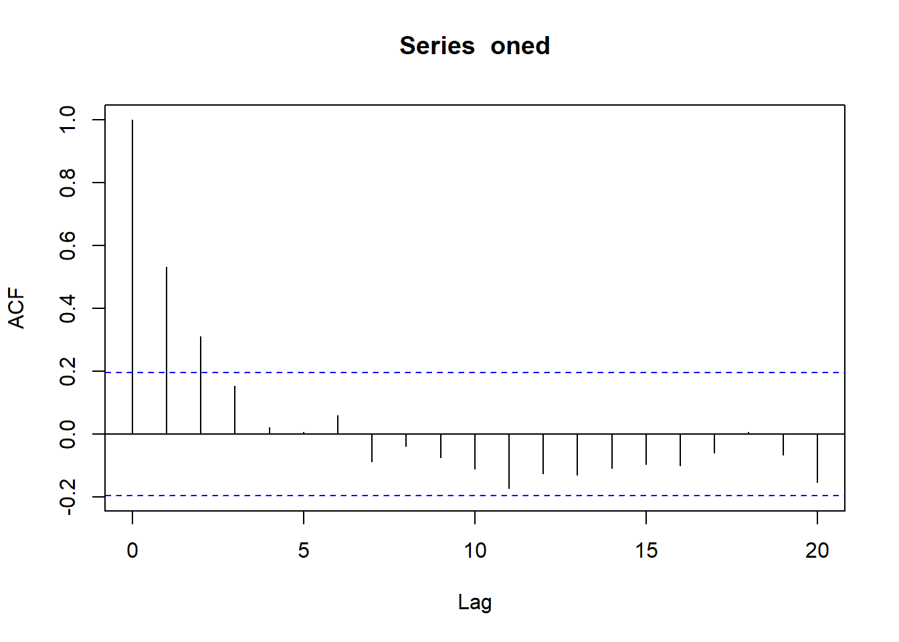
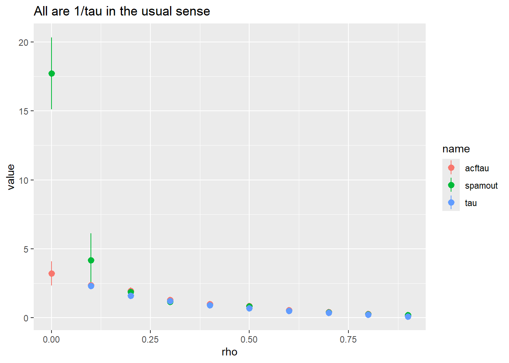
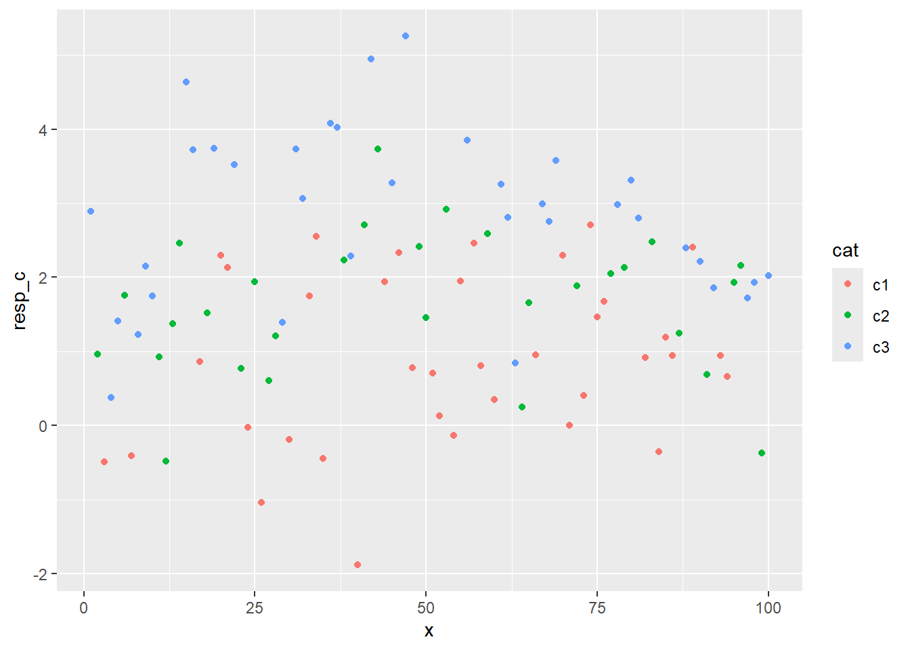

knitr::opts_knit$set(root.dir = rprojroot::find_rstudio_root_file())Analysing spatially autocorrelated data with spaMM
library(tidyverse)
library(spaMM)
library(foreach)devtools::load_all()ℹ Loading galenRI often work with spatially autocorrelated data, and want to estimate fixed effects while dealing with autocorrelation (and typically, estimate the autocorrelation as well). I also often work with the spaMM package, which was built for this, but usually use it for other things. Here, I’ll see if it works for the sorts of data we often encounter. They’re often not quite what we’d think of as geostatistics, but and might be any sort of autocorrelated sequence, e.g. sections of stream.
Testing
I’ll test with a modeled autocorrelated sequence with known AC, and then modify with fixed effects.
I only want a line, at least at first, so grab one row. (ac2d should be fixed to work with 1)
oned <- ac2d(n_x = 100, n_y = 10, rho_x = 0.5, printStats = TRUE)[1] "Mean of all points is 0.016"
[1] "Var of all points is 1.139"
[1] "Mean y AC is -0.109"
[1] "Mean x AC is 0.45"oned <- oned[1, ]checkac <- acf(oned)
checkac$acf[2][1] 0.5322618Just the AC, no fixed effects
Can spaMM just pick that up without a fixed effect? Ie the only thing there is the data, with no predictor.
onedf <- tibble(obs = oned, x = 1:length(obs))no_fix <- fitme(obs ~ 1 + Matern(1|x), data = onedf, fixed = list(nu=0.5))According to spaMM, Matern with \(\nu = 0.5\) fits a spatial correlation \(\exp(-\rho d)\) , which superficially looks a lot like what we have for the correlation length, \(\tau\), where the autocorrelation at distance d is \(A(d) = e^{(-d/\tau)}\). Since \(A(d) = \rho^d\), \(\tau = -1/ln(\rho)\) (and \(\rho = exp{(-1/\tau)}\)). So is this really just fitting \(1/\tau\) and calling it \(\rho\)?
get_ranPars(no_fix, which = 'corrPars')[[1]]$rho[1] 0.55831# used realised lag-1 rho rather than defined
1/(-1/log(checkac$acf[2]))[1] 0.6306197Sure looks like it.
alltib <- foreach(i = 0:9,
.combine = bind_rows,
.multicombine = TRUE) %do% {
oned <- ac2d(n_x = 100, n_y = 10, rho_x = i/10, printStats = FALSE)
# doing this on the matrix does all the crosses. Don't want htat
rhotib <- foreach(j = 1:nrow(oned),
.combine = bind_rows,
.multicombine = TRUE) %do% {
checkac <- acf(oned[j, ], plot = FALSE)
onedf <- tibble(obs = oned[j, ], x = 1:length(obs))
no_fix <- fitme(obs ~ 1 + Matern(1|x), data = onedf, fixed = list(nu=0.5))
spamout <- get_ranPars(no_fix, which = 'corrPars')[[1]]$rho
acftau <- 1/(-1/log(checkac$acf[2]))
tibble(spamout = spamout, acftau = acftau,
rho = i/10, tau = 1/(-1/log(i/10)))
}
rhotib
}Warning in log(checkac$acf[2]): NaNs produced
Warning in log(checkac$acf[2]): NaNs produced
Warning in log(checkac$acf[2]): NaNs produced
Warning in log(checkac$acf[2]): NaNs produced
Warning in log(checkac$acf[2]): NaNs produced
Warning in log(checkac$acf[2]): NaNs produced
Warning in log(checkac$acf[2]): NaNs produced
Warning in log(checkac$acf[2]): NaNs produced
Warning in log(checkac$acf[2]): NaNs producedalltib |>
pivot_longer(-rho) |>
ggplot(aes(x = rho, y = value, color = name)) +
stat_summary() +
ggtitle("All are 1/tau in the usual sense")Warning: Removed 19 rows containing non-finite outside the scale range
(`stat_summary()`).No summary function supplied, defaulting to `mean_se()`
So, spaMM does a good job once there’s about a rho of 0.2. Perhaps that’s step 1: ask if there’s enough AC to care. And if we’re getting 1/taus of > 2 or 3, maybe say it’s likely not tellng us much? That’s rhos of
exp(-1/ (1/2))[1] 0.1353353exp(-1/ (1/3))[1] 0.04978707Which we wouldn’t call sig- see the ac plot above- it doesn’t go sig until 0.2, which is a 1/tau of
1/(-1/log(0.2))[1] 1.609438Obviously sample size will change that. Not sure if larger sample size will help spaMM, it’s slow when things get big.
Testing covariates
OK, now let’s see if this continues to work and returns useful estimates for covariates. Lets say there’s some covariate. This is really just hand-building the example in the spaMM intro, but a bit more relevant to the issues we have here.
oned <- ac2d(n_x = 100, n_y = 10, rho_x = 0.5, printStats = TRUE)[1] "Mean of all points is 0.021"
[1] "Var of all points is 0.941"
[1] "Mean y AC is -0.066"
[1] "Mean x AC is 0.411"oned <- oned[1, ]fdf <- tibble(obs = oned, x = 1:length(obs))Categorical
so far, same as above. Now we want a categorical fixed effect (spaMM does quant, but we’ll really want both, I think)
fdf$cat_q <- sample(3, nrow(fdf), replace = TRUE)
fdf <- fdf |>
# make additive, otherwise I'm adjusting the group variance, not the group means
mutate(resp_c = obs + cat_q,
cat = paste0('c', cat_q)) withfix <- fitme(resp_c ~ cat + Matern(1|x), data = fdf, fixed = list(nu=0.5))summary(withfix)formula: resp_c ~ cat + Matern(1 | x)
ML: Estimation of corrPars, lambda and phi by ML.
Estimation of fixed effects by ML.
Estimation of lambda and phi by 'outer' ML, maximizing logL.
family: gaussian( link = identity )
------------ Fixed effects (beta) ------------
Estimate Cond. SE t-value
(Intercept) 0.6565 0.2148 3.057
catc2 1.2136 0.2245 5.405
catc3 2.1992 0.2204 9.976
--------------- Random effects ---------------
Family: gaussian( link = identity )
--- Correlation parameters:
1.nu 1.rho
0.5000000 0.7352398
--- Variance parameters ('lambda'):
lambda = var(u) for u ~ Gaussian;
x : 1.052
# of obs: 100; # of groups: x, 100
-------------- Residual variance ------------
phi estimate was 0.146829
------------- Likelihood values -------------
logLik
logL (p_v(h)): -141.2862That’s pretty good, really
ggplot(fdf, aes(x = x, y = resp_c, color = cat)) + geom_point()
How does that compare to when I ignore ac?
flm <- lm(resp_c ~ cat, data = fdf)
summary(flm)
Call:
lm(formula = resp_c ~ cat, data = fdf)
Residuals:
Min 1Q Median 3Q Max
-2.78904 -0.81428 0.03124 0.83761 2.43251
Coefficients:
Estimate Std. Error t value Pr(>|t|)
(Intercept) 0.9074 0.1824 4.974 2.84e-06 ***
catc2 0.7196 0.2731 2.634 0.00981 **
catc3 1.9149 0.2598 7.369 5.72e-11 ***
---
Signif. codes: 0 '***' 0.001 '**' 0.01 '*' 0.05 '.' 0.1 ' ' 1
Residual standard error: 1.095 on 97 degrees of freedom
Multiple R-squared: 0.3626, Adjusted R-squared: 0.3494
F-statistic: 27.59 on 2 and 97 DF, p-value: 3.275e-10That’s just as bad, really
Quantitative, independent
Now, as in the spaMM intro, let’s assume we have an independent quant covariate
fdf$quant <- sample(nrow(fdf))
fdf <- fdf |>
mutate(resp_q = obs+quant*0.1)
withq <- fitme(resp_q ~ quant + Matern(1|x), data = fdf, fixed = list(nu=0.5))summary(withq)formula: resp_q ~ quant + Matern(1 | x)
ML: Estimation of corrPars, lambda and phi by ML.
Estimation of fixed effects by ML.
Estimation of lambda and phi by 'outer' ML, maximizing logL.
family: gaussian( link = identity )
------------ Fixed effects (beta) ------------
Estimate Cond. SE t-value
(Intercept) -0.4451 0.226094 -1.969
quant 0.1047 0.003067 34.143
--------------- Random effects ---------------
Family: gaussian( link = identity )
--- Correlation parameters:
1.nu 1.rho
0.5000000 0.9007638
--- Variance parameters ('lambda'):
lambda = var(u) for u ~ Gaussian;
x : 1.166
# of obs: 100; # of groups: x, 100
-------------- Residual variance ------------
phi estimate was 0.00183086
------------- Likelihood values -------------
logLik
logL (p_v(h)): -140.7463That’s pretty good for both the rho and the estimate
Trend
Now, let’s say there’s a trend with x itself.
fdf <- fdf |>
mutate(resp_trend = obs + x*0.1)
witht <- fitme(resp_trend ~ x + Matern(1|x), data = fdf, fixed = list(nu=0.5))summary(witht)formula: resp_trend ~ x + Matern(1 | x)
ML: Estimation of corrPars, lambda and phi by ML.
Estimation of fixed effects by ML.
Estimation of lambda and phi by 'outer' ML, maximizing logL.
family: gaussian( link = identity )
------------ Fixed effects (beta) ------------
Estimate Cond. SE t-value
(Intercept) -0.3349 0.334140 -1.002
x 0.1025 0.005722 17.905
--------------- Random effects ---------------
Family: gaussian( link = identity )
--- Correlation parameters:
1.nu 1.rho
0.5000000 0.7461973
--- Variance parameters ('lambda'):
lambda = var(u) for u ~ Gaussian;
x : 0.9383
# of obs: 100; # of groups: x, 100
-------------- Residual variance ------------
phi estimate was 0.227616
------------- Likelihood values -------------
logLik
logL (p_v(h)): -141.6942Also does a good job with that.
Everything?
What happens if I just hit it with everything?
fdf <- fdf |>
mutate(resp_all = obs + x*0.1 + 1*cat_q + quant*0.1)
withall <- fitme(resp_all ~ x + cat + quant + Matern(1|x),
data = fdf, fixed = list(nu=0.5))summary(withall)formula: resp_all ~ x + cat + quant + Matern(1 | x)
ML: Estimation of corrPars, lambda and phi by ML.
Estimation of fixed effects by ML.
Estimation of lambda and phi by 'outer' ML, maximizing logL.
family: gaussian( link = identity )
------------ Fixed effects (beta) ------------
Estimate Cond. SE t-value
(Intercept) 0.2678 0.399366 0.6707
x 0.1032 0.005860 17.6148
catc2 1.2070 0.221550 5.4482
catc3 2.1965 0.216833 10.1300
quant 0.1046 0.003036 34.4505
--------------- Random effects ---------------
Family: gaussian( link = identity )
--- Correlation parameters:
1.nu 1.rho
0.5000000 0.8399614
--- Variance parameters ('lambda'):
lambda = var(u) for u ~ Gaussian;
x : 1.183
# of obs: 100; # of groups: x, 100
-------------- Residual variance ------------
phi estimate was 1.65693e-05
------------- Likelihood values -------------
logLik
logL (p_v(h)): -140.0889That’s pretty good. Though noting that I don’t actually have any residual error on any of this. Well, except that the 2d ac has error variance epsilon. It’s not quite the same, but it’s something.
Residuals
fdf <- fdf |>
mutate(resp_resid = obs + x*0.1 + 1*cat_q + quant*0.1 + rnorm(nrow(fdf), sd = sqrt(1)))
withresid <- fitme(resp_resid ~ x + cat + quant + Matern(1|x),
data = fdf, fixed = list(nu=0.5))summary(withresid)formula: resp_resid ~ x + cat + quant + Matern(1 | x)
ML: Estimation of corrPars, lambda and phi by ML.
Estimation of fixed effects by ML.
Estimation of lambda and phi by 'outer' ML, maximizing logL.
family: gaussian( link = identity )
------------ Fixed effects (beta) ------------
Estimate Cond. SE t-value
(Intercept) 0.72999 0.618223 1.181
x 0.09691 0.009226 10.505
catc2 1.32735 0.317452 4.181
catc3 2.42895 0.306107 7.935
quant 0.09907 0.004381 22.613
--------------- Random effects ---------------
Family: gaussian( link = identity )
--- Correlation parameters:
1.nu 1.rho
0.5000000 0.2558873
--- Variance parameters ('lambda'):
lambda = var(u) for u ~ Gaussian;
x : 0.8774
# of obs: 100; # of groups: x, 100
-------------- Residual variance ------------
phi estimate was 1.21494
------------- Likelihood values -------------
logLik
logL (p_v(h)): -171.5012That’s pretty good still. The random AC inflates some. Obviously it will change depending on the size of that residual variance. The sd of the data without the residual is
sd(fdf$resp_all)[1] 4.209415